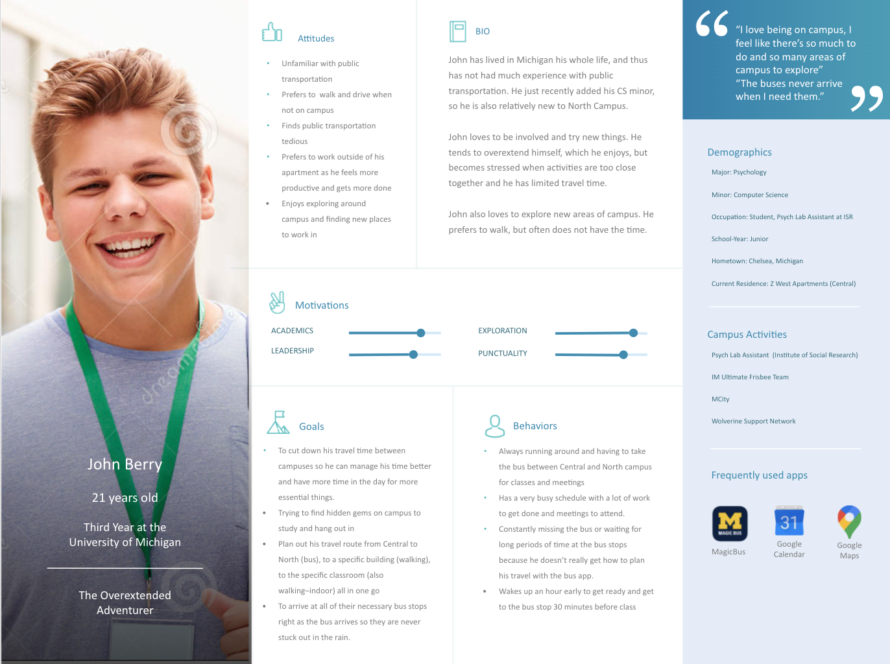

U-M Campus Navigation User Research
Timeline: 8 weeks
Role: UX Researcher
Tools: Miro, G Suite
Project description: We recieved a client brief, and both prepared and conducted experience research to determine the biggest challenges that students face in getting around campus and find what they are looking for for use in an application.
Overview
During the process of the redesign, I began with re-organizing the information architecture of the site. Then, I met with leaders of UMEB to discuss what they wanted in a site and took their needs into account when drawing up my original sketches. I created low-fidelity wireframes describing the architecture, and ensured that the team was satisfied before proceeding. I then built the site from scratch using HTML, CSS, JavaScript, and Bootstrap plugins. Over time, I have maintianed the site by periodically adding information and other features as needed, but most of it remains the same as when I first designed it about two years ago.
Interview Stage
For the first two weeks of this project, we identified research questions and built an interview guide. Next we conducted user interviews to identify the needs, desires, and current pain points of Michigan students when navigating campus.
Data Analysis
After conducting interviews, my team coded our notes and transcripts to identify recurring themes. After establishing the main patterns, we utilized affinity diagramming to confirm key findings in the data and establish their significance to our research.
Developing Personas & Scenarios
Based on key findings from the user interviews we conducted, we developed user personas and cooresponding situations to articulate the unique challenges that U-M students face with navigation.
Key Takeaways
EDIT EDIT